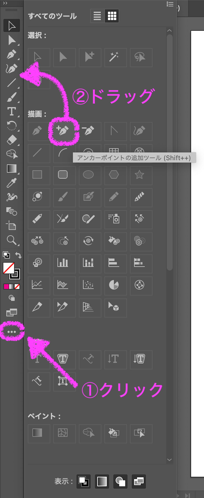

画面の見方
① メニューバー
Illustratorのさまざまな機能がメニューごとに分類されています。
② タブ
複数のIllustratorファイルを開いているときに、タブで切り替えられます。
③ ツールバー
イラストやグラフィック制作に使うさまざまなツールを選択します。
④ アートボード
イラストなどのグラフィックを制作するエリアです。
⑤ パネル
Illustratorの機能ごとにさまざまな種類があり、必要に応じて切り替えて使います。
ツールバーの再表示
ツールバーを誤って非表示にしてしまった場合、
メニューバー ＞ ウィンドウ ＞ ツールバー ＞ 基本 を選択すると、ツールバーを再表示することができます。
操作の取消
誤った操作をしてしまった場合、次のように操作の取り消しをすることができます。
メニューバー ＞ 編集 ＞ 取り消し または ⌘コマンド+Z（コマンド⌘キーを押しながらZキーを押す）。
ツールバーに表示されていないツールを表示したり、よく使うツールをツールバーに追加したりする方法を照会します。

① すべてのツールを表示
ツールバーに表示されていないツールを使用するときは、ツールバー下部の･･･をクリックし、すべてのツールを表示します。
② ツールバーへの追加
よく使うツールをツールバーに表示するには、ツール一覧から目的のツールをツールバーにドラッグします。
アンカーポイントの追加ツールと削除ツールはよく使うので、ツールバーに入れておきましょう。
画像ファイルには、ラスタ画像とベクタ画像という２つの主要な形式があります。
ラスタ画像
ラスタ画像とは、色のついた小さい正方形であるピクセル（画素）を大量に組み合わせた画像です。各ピクセルには、色や濃淡の情報が保存されています。ラスタ画像はペイント系ソフトウェア（Adobe Photoshop等）で作成します。ピクセル数が多いほど高画質になり、少ないほど低画質になります。拡大すると、ジャギー（ギザギザ）ができ、粗くなります。ラスタ画像は、デジタル写真やWEB画像などに用いられ、主なファイル形式はJPEG，GIF，PNGなどがあります。

ベクタ画像
ベクタ画像とは、座標や数式によって、直線・曲線やそれによってできた境界線・境界線内の領域の塗りの色を表現します。ベクタ画像はドロー系ソフトウェア（Adobe Illustrator等）で作成します。拡大しても数式により再計算されるため、ジャギーはできず、画像が粗くなることはありません。そのため、デジタルイラストや会社のロゴ，チラシやポスターの原稿に用いられ、主なファイル形式は、SVG，PDFなどがあります。
なお、ディスプレイは小さいドットの集まりで表示されているので、ベクタ画像を画面に表示するときには、ラスタ形式に変換されて表示されています。また、印刷物も同様で、プリンターは紙の上にインクを小さなドットで塗るので、ラスタ形式に変換されて印刷されます。このように、ベクタ画像をラスタ画像に変換することをラスタライズといいます。
パス
Illustratorで作成する円や長方形などの図形をパスといい、パスはアンカーポイントとセグメントで構成されます。
アンカーポイント
図形の形状を決めるための点をアンカーポイントといいます。アンカーポイントには、下記のコーナーポイントとスムーズポイントの２種類があります。
セグメント
アンカーポイントどうしを結ぶ線をセグメントといいます。
方向線（ハンドル）
曲線部分のアンカーポイントからは、セグメントの形状を決める方向線（ハンドル）がでており、これによって曲線の形が決まります。
スムーズポイント
アンカーポイントの方向線（ハンドル）の端を ダイレクト選択ツールでクリックして動かすと、曲線の形を変えることができます。
ダイレクト選択ツールでクリックして動かすと、曲線の形を変えることができます。
コーナーポイント
スムーズポイントの方向線（ハンドル）の端を アンカーポイントツールでクリックして動かすと、スムーズポイントがコーナーポイントに換わり、左右のハンドルを別々に動かすことができます。
アンカーポイントツールでクリックして動かすと、スムーズポイントがコーナーポイントに換わり、左右のハンドルを別々に動かすことができます。
線と塗り
パスの内部に色を指定することを塗りといい、パスそのものにも色を指定できます。